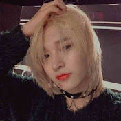

Genshin Chinese VA kinsen & 鹿喑kana - Renai Circulation (恋愛サーキュレーション) Color Coded Lyrics KAN/ROM/ENG

hitorae
Published on Feb 27, 2021
Comment
Stanley Parable
I'm not on TikTok nor will I ever be but even I'm not immune to the trending songs in the anime circle! This song is unsurprsingly one of them, mainly due to an English cover
that Lizz Robinett did, though I've recently been listening to this cover sung by two of the Chinese voice actors from Genshin Impact. I find it really sweet as a duet and their voices are very soft
and comforting to listen to
I've never even played Genshin but somehow I ended up getting very invested in a handful of characters' stories and now it's basically the only thing I've been thinking about since July
Stanley Parable
I'm not on TikTok nor will I ever be but even I'm not immune to the trending songs in the anime circle! This song is unsurprsingly one of them, mainly due to an English cover that Lizz Robinett did, though I've recently been listening to this cover sung by two of the Chinese voice actors from Genshin Impact. I find it really sweet as a duet and their voices are very soft and comforting to listen to
I've never even played Genshin but somehow I ended up getting very invested in a handful of characters' stories and now it's basically the only thing I've been thinking about since July